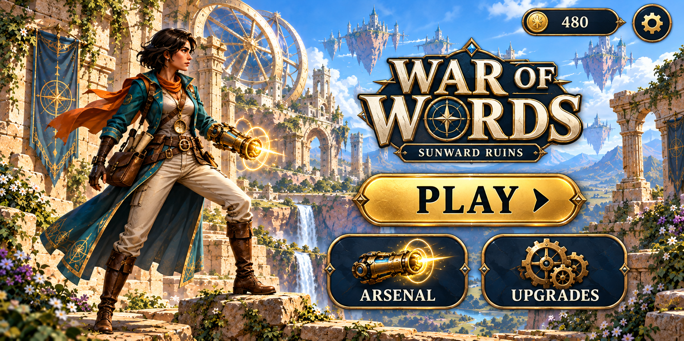
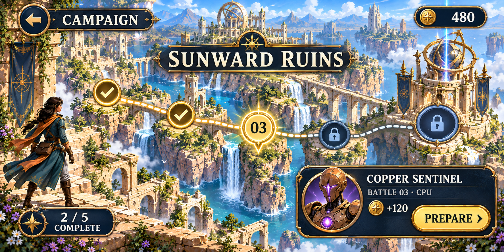
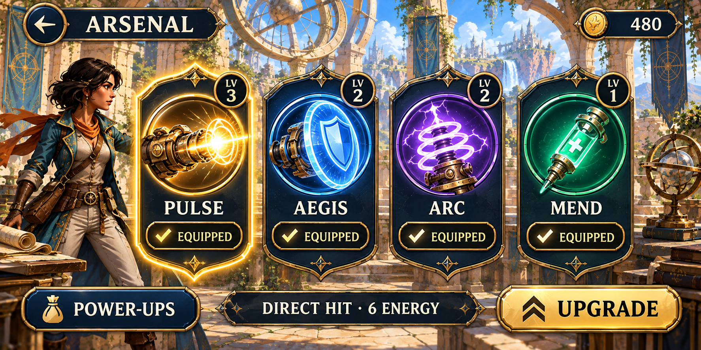
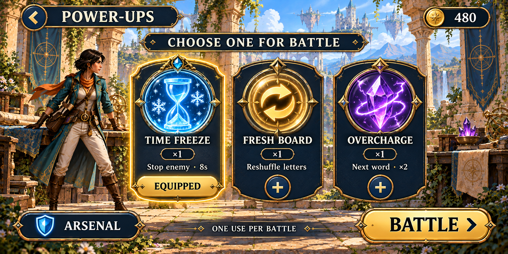
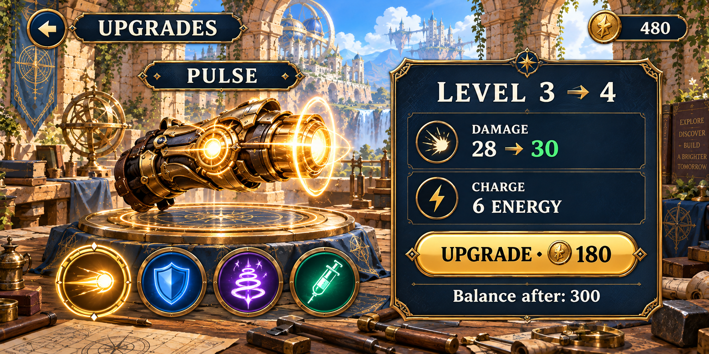
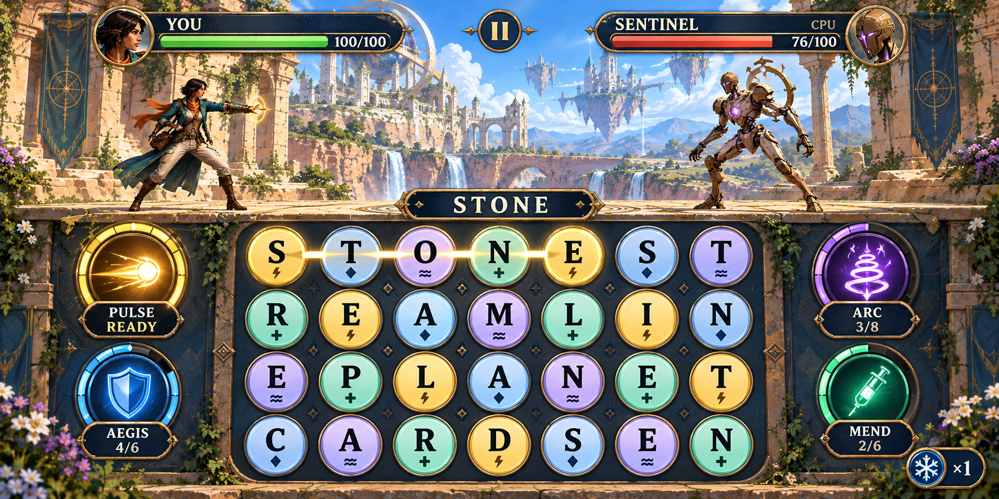

01 — Glavni meni

02 — Kampanja

03 — Arsenal

04 — Power-upovi

05 — Unapređenja

06 — Borba

Statični vizuelni predlog za mobilnu igru u landscape položaju. Engleski interfejs. Osnova za kasniju izradu u Godotu.
Ovo je galerija dizajna. Komande nacrtane na slikama nisu aktivne. Klik na sliku otvara njen PNG u punoj veličini.





